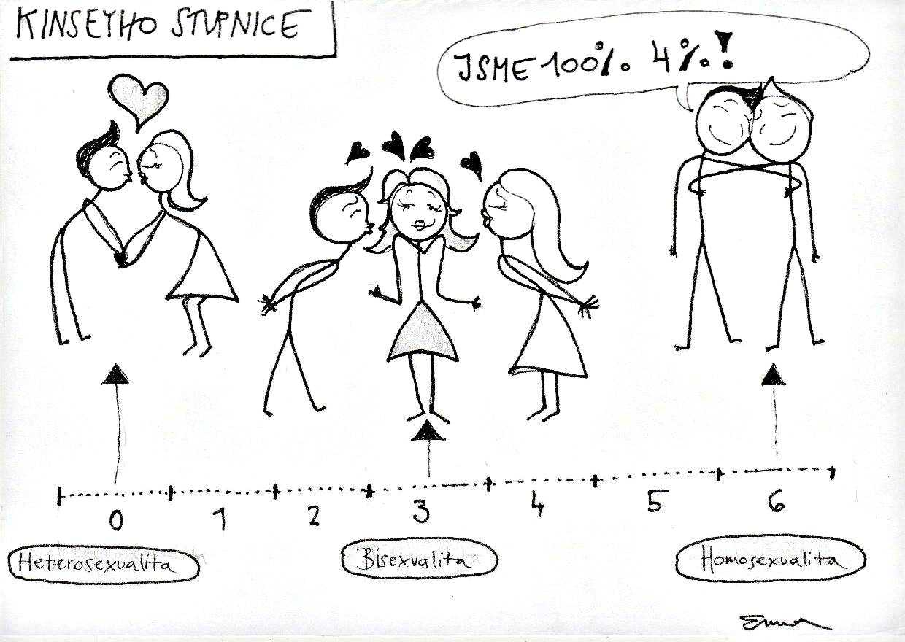

« předchozí článek | obsah čísla | následující článek »
Následující myšlenky nemusejí být v žádném smyslu pravdivé. Předkládám
vám je jako výplody své duše bez jakékoliv záruky, dokonce bez
implicitní záruky pochopitelnosti. Jsou to myšlenky s ručením omezeným.
- Zodpovědnost je schopnost konat tak, aby toho pak člověk nelitoval.
- Obraz vydá za tisíc slov, video za milion, jenže z milionu slov za minutu se člověk musí zbláznit.
- Rozumné je takové chování, kterým „nepodřezáváme větev“, pod sebou ani pod nikým jiným.
- Pohleďte! Posvátný okamžik, kdy člověk pozná, kam bude patřit na Kinseyho stupnici!
- Napadlo už vás někdy, že každá myšlenka už napadla spoustu lidí před vámi a napadne ještě spoustu lidí po vás?
- Lidé nemusí být normální, stačí, když se chápou.
- Co se s vložkou stane, až nasaje poslední kapku krve? Roztáhne křidélka a odletí.
- Invalida je porouchaný člověk asi tolik, jako je automobil porouchané letadlo.
- Došlo k potlačování práv hnutí směřujících k potlačení práv osob nenávidějících určitou skupinu obyvatel?
- Originální umělecká díla jsou špatné plagiáty.
- Je rozdíl mezi slovy ezoterický a exoterický ezoretický, nebo exoterický?
- Tato deklarace deklaruje matematické operátory. Protože matematické operátory jsou již implicitně deklarovány, nemá tato deklarace žádný význam, jako každá deklarace však může být uvedena opakovaně.
- Mám radost; dnes jsem velmi výkonný – poslouchám hudbu, vyřizuji e-maily, sleduji televizní zpravodajství, kreslím přitom grafy prodeje a čtu článek o tom, jak dělat víc věcí najednou snižuje kreativitu, porozumění psanému textu a schopnost koncentrace!

« předchozí článek | obsah čísla | následující článek »